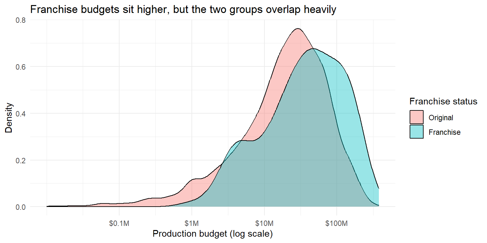
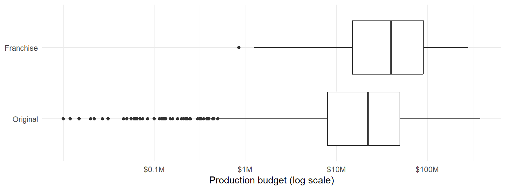
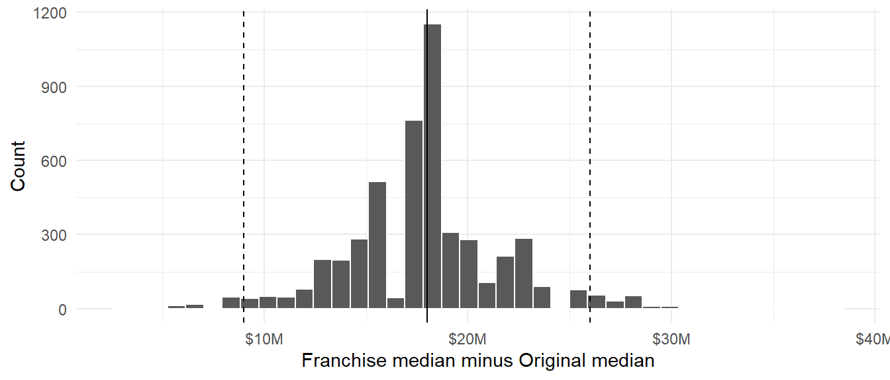

library(tidyverse)
set.seed(24252678)
# Same cleaning as Task 1: placeholders become NA and all rows are kept
movies <- read_csv("data/movies.csv") |>
mutate(
budget = if_else(budget < 10000, NA_real_, budget),
revenue = if_else(revenue == 0, NA_real_, revenue)
)
# Films with a usable budget (a median needs a budget)
t2 <- movies |>
filter(!is.na(budget), !is.na(franchise_status)) |>
mutate(franchise_status = factor(franchise_status, levels = c("Original", "Franchise")))Task 2
Task 2: Franchise vs. Original: Investment Strategy
Budgets below $10,000 are placeholders, so they were set to NA and no rows were deleted. Films with no usable budget are left out of the budget comparison only, because a median cannot be calculated without a budget. Table 1 shows how many films this affects.
movies |>
filter(!is.na(franchise_status)) |>
group_by(franchise_status) |>
summarise(
films = n(),
usable_budget = sum(!is.na(budget)),
missing_budget = sum(is.na(budget)),
pct_missing = round(100 * mean(is.na(budget)), 1)
) |>
knitr::kable(col.names = c("Franchise status", "Films", "Usable budget", "Missing budget", "% missing"))| Franchise status | Films | Usable budget | Missing budget | % missing |
|---|---|---|---|---|
| Franchise | 260 | 233 | 27 | 10.4 |
| Original | 4543 | 3498 | 1045 | 23.0 |
1. Comparing the budget distributions
t2 |>
group_by(franchise_status) |>
summarise(
n = n(), min = min(budget), q1 = quantile(budget, 0.25),
median = median(budget), mean = mean(budget),
q3 = quantile(budget, 0.75), max = max(budget), sd = sd(budget)
) |>
mutate(across(min:sd, ~ round(.x / 1e6, 1))) |>
knitr::kable(col.names = c("Franchise status", "n", "Min", "Q1", "Median", "Mean", "Q3", "Max", "SD"))| Franchise status | n | Min | Q1 | Median | Mean | Q3 | Max | SD |
|---|---|---|---|---|---|---|---|---|
| Original | 3498 | 0.0 | 8 | 22 | 35.7 | 50 | 380 | 40.5 |
| Franchise | 233 | 0.9 | 15 | 40 | 62.7 | 90 | 280 | 62.7 |
ggplot(t2, aes(x = budget, fill = franchise_status)) +
geom_density(alpha = 0.4) +
scale_x_log10(
breaks = c(1e5, 1e6, 1e7, 1e8),
labels = c("$0.1M", "$1M", "$10M", "$100M")
) +
labs(
title = "Franchise budgets sit higher, but the two groups overlap heavily",
x = "Production budget (log scale)",
y = "Density",
fill = "Franchise status"
) +
theme_minimal()
ggplot(t2, aes(x = budget, y = franchise_status)) +
geom_boxplot() +
scale_x_log10(
breaks = c(1e5, 1e6, 1e7, 1e8),
labels = c("$0.1M", "$1M", "$10M", "$100M")
) +
labs(x = "Production budget (log scale)", y = NULL) +
theme_minimal()
Both are positively skewed (Figure 1); most movies have low budgets, with a few having extremely high budgets, so the median will provide a good estimate of a typical movie rather than the mean. Table 2 indicates a median budget of $40M for Franchises compared to $22M for Originals, and this can be seen in Figure 2. The two categories overlap significantly, hence many movies from Originals are expensive than many movies from Franchises. A log scale is used because we want to see the majority of the movies, and real values are shown in Table 2.
2. Interval estimate for the difference in median budget
We used a 95% percentile bootstrap interval (Week 6): each group was resampled with replacement at its own size, Franchise median minus Original median was calculated, this was repeated 5,000 times, and the middle 95% was taken. All calculations are in dollars.
obs_diff <- t2 |>
group_by(franchise_status) |>
summarise(median_budget = median(budget)) |>
summarise(
diff = median_budget[franchise_status == "Franchise"] -
median_budget[franchise_status == "Original"]
) |>
pull(diff)
perform_bootstrap <- function(bootstrap_number) {
t2 |>
group_by(franchise_status) |>
slice_sample(prop = 1, replace = TRUE) |>
summarise(median_budget = median(budget)) |>
summarise(
boot_diff = median_budget[franchise_status == "Franchise"] -
median_budget[franchise_status == "Original"]
) |>
mutate(bootstrap_sample = bootstrap_number)
}
bootstrap_results <- map_dfr(.x = 1:5000, .f = perform_bootstrap)
ci <- quantile(bootstrap_results$boot_diff, c(0.025, 0.975))tibble(observed = obs_diff, lower = ci[1], upper = ci[2]) |>
mutate(across(everything(), ~ round(.x / 1e6, 1))) |>
knitr::kable(col.names = c("Observed difference", "Lower 95%", "Upper 95%"))| Observed difference | Lower 95% | Upper 95% |
|---|---|---|
| 18 | 9 | 26 |
bootstrap_results |>
ggplot(aes(x = boot_diff)) +
geom_histogram(bins = 40, colour = "white") +
geom_vline(xintercept = obs_diff) +
geom_vline(xintercept = ci, linetype = "dashed") +
scale_x_continuous(labels = ~ paste0("$", .x / 1e6, "M")) +
labs(x = "Franchise median minus Original median", y = "Count") +
theme_minimal()
The observed difference in median budget is $18M, and the 95% interval runs from $9M to $26M (Table 3, Figure 3). The interval does not include zero, so the typical Franchise budget is higher than the typical Original budget.
3. Does this support leadership’s concern?
t2 |>
group_by(franchise_status) |>
summarise(
n_films = n(),
share_of_films = n() / nrow(t2),
share_of_budget = sum(budget) / sum(t2$budget),
under_10M = mean(budget < 10e6),
over_100M = mean(budget > 100e6)
) |>
mutate(across(share_of_films:over_100M, ~ round(.x, 3))) |>
knitr::kable(col.names = c("Franchise status", "Films", "Share of films", "Share of budget",
"Under $10M", "Over $100M"))| Franchise status | Films | Share of films | Share of budget | Under $10M | Over $100M |
|---|---|---|---|---|---|
| Original | 3498 | 0.938 | 0.895 | 0.268 | 0.065 |
| Franchise | 233 | 0.062 | 0.105 | 0.176 | 0.223 |
movies |>
filter(!is.na(revenue), !is.na(franchise_status)) |>
group_by(franchise_status) |>
summarise(total_revenue = sum(revenue)) |>
mutate(share_of_revenue = round(total_revenue / sum(total_revenue), 3)) |>
knitr::kable(col.names = c("Franchise status", "Total revenue", "Share of revenue"))| Franchise status | Total revenue | Share of revenue |
|---|---|---|
| Franchise | 56198351944 | 0.142 |
| Original | 338899495500 | 0.858 |
Leadership’s concern is only partly supported. Franchise films do indeed have larger budget per movie, where 22% of them have a budget higher than $100M whereas only 6.5% of Originals do that (Table 4). However, Originals are not primarily small movies because 27% of them have budgets less than $10M. Franchise films represent 6% of films, have 10% of budget (Table 4) and 14% of revenue (Table 5), so Originals provide most of both expenses and income. It is an observation, so it only reveals budget gap without providing evidence on causation. Moreover, 23% of Originals do not have their budget specified at all compared to 10% of Franchise films (Table 1), so the actual gap may be even larger.
4. Investment advice
The data doesn’t indicate that Originals are constrained by smaller budgets. This is the optimal approach: keep a few high-budget Franchise movies and increase the number of mid-budget Originals instead of considering Originals as small investments. The only problem to look out for is the extremely high Franchise budgets, because a couple of movies can affect the whole slate negatively. It doesn’t say anything about return on investment, and so the optimal mix will include the results from Tasks 3 and 4.
Summary for the Head of Production
We compared Franchise and Original budgets using the median, which is not affected by some very costly movies. An average Franchise movie had an estimated budget of $40M while an average Original had an estimated budget of $22M. With 95% confidence we estimate that the real difference lies in the interval from $r round(ci[1] / 1e6, 1)M to $r round(ci[2] / 1e6, 1)M. Franchise movies have higher budget on average but there is significant overlap between the two distributions, Original movies are not mostly low-budget movies, and Franchise movies represent only 10% of the total budget. We recommend maintaining some Franchise movies and developing mid-budget Originals.